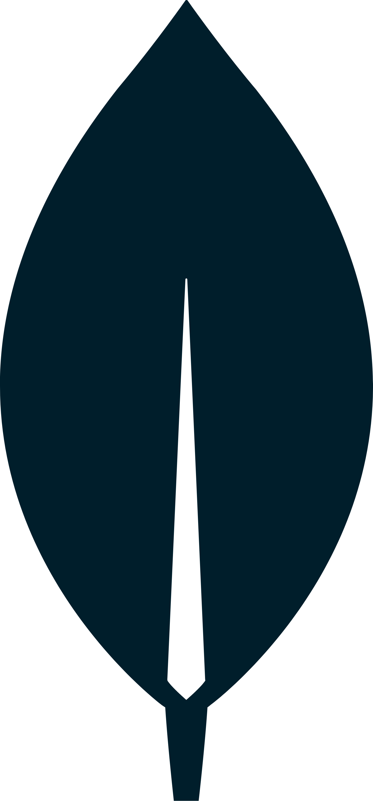

Chronique ludique
Passionné de jeux de société que l'on dit moderne, je vous invite a venir voir mes pérégrinations dans ce monde
fou. Mes avis sur mes différentes expériences en jeu de société pour adulte, avec mes enfants mais aussi de jeu de rôle.
Projet 2
Réalisation d'un site vitrine, pour une association d'amitié entre deux les villes de La Chapelle sur erdre et la ville de
en Roumanie.
Projet 3
Projet participatif.
Booki
Ce premier projet me projetais dans le premier travail d'un développeur la transformation d'une maquette.
Je devais donc réaliser une page d'un site statique grâce au pouvoir structurant du HTML et une mise en page dynamique
grâce aux nombreuses possibilités du CSS et adaptatif aux différents écrans grâce au responsive.
Ohmyfood
Dans ce projet je devais monter d'un cran en réalisant plusieurs pages, toujours statique, d'un site de réservation
de repas, mais avec des demandes plus pointus sur la mise en page du site avec la réalisation d'effets visuel plus poussé, et la
familiarisation de Sass.
La Panthère
Dans ce projet une entreprise de design me contacte pour faire apparaître son site plus haut dans les résultats
google en fonction de certains mots-clés. Après une analyse des limites du site, j'ai appliqué des améliorations tant
technique que structurel et réalisé un dossier présentant les différents axes d'améliorations et en présentant les résultats
après ces modifications.
Kanap
Dans ce projet, je rejoins une équipe de développeur et ma mission est de réaliser la partie front-end d'un site
de e-commerce, générer l'affichage des produits à partir d'une base de donnée, générer des pages automatiques, récupérer des données
dans le local storage, et envoyer des informations vers la base de donnée.
Piquante

Dans ce projet, une entreprise qui souhaitais créer un site communautaire autour des sauces piquantes. Mais l'entreprise
avait besoin d'un développeur pour créer l'API de ce dernier, donc grâce à node.js, express.js et mongoDB j'ai réalisé une API sécurisé
pour ce site.
Kasa
Enfin le dernier projet, je suis contacté pour réaliser, pour une entreprise de location entre particuliler, un site en React
en récupérant des données à partir d'une base de donnée. Dans ce projet j'ai pu dévéloppé un site en single page application avec sa navigation
spécifique et son utilisation de composant.